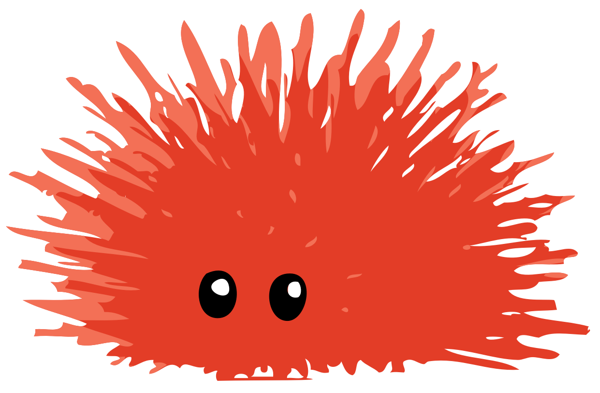
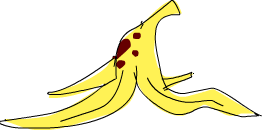

class: center, middle .title[Advenced Features] <br/> <br/> <br/> <br/> .center[] <br/> <br/> .author[Rnic / H.-S Zheng] <br/> <br/> <br/> .date[April 20, 2019] <br/> --- # .center[Outline] <br/> ## Unsafe and Lifetimes ## Playing FFI ## Macros ## Types and Traits ## Fn and Closure --- # .center[Outline] <br/> ## .purple[Unsafe and Lifetimes] ## .purple[Playing FFI] ## .pink[Macros] ## Types and Traits ## Fn and Closure --- class: center, middle # Unsafe and Lifetimes <br/> .center[] .footnote[(Image. http://learnyouahaskell.com/a-fistful-of-monads)] --- ## What is Unsafe operation in Rust ? -- * Dereference a raw pointer * Call an unsafe function or method * Access or modify a mutable static variable * Implement an unsafe trait --- ## What is Unsafe operation in Rust ? * .highlight[**Dereference a raw pointer**] * Call an unsafe function or method * Access or modify a mutable static variable * Implement an unsafe trait ```rust let ptr; { let x = 5; ptr = &x as *const i32; } unsafe { println!("{:?}", *ptr); } ``` --- ## What is Unsafe operation in Rust ? * Dereference a raw pointer * .highlight[**Call an unsafe function or method**] * Access or modify a mutable static variable * Implement an unsafe trait ```rust unsafe fn unsafe_func() { } fn main() { unsafe { unsafe_func(); } } ``` --- ## What is Unsafe operation in Rust ? * Dereference a raw pointer * Call an unsafe function or method * .highlight[**Access or modify a mutable static variable**] * Implement an unsafe trait <br/> ```rust static mut VALUE: i32 = 5; ``` -- <br/> If every thread access or modify it then **Data Race** will happen. --- ## What is Unsafe operation in Rust ? * Dereference a raw pointer * Call an unsafe function or method * Access or modify a mutable static variable * .highlight[**Implement an unsafe trait**] ```rust unsafe trait Foo { // methods go here } unsafe impl Foo for i32 { // method implementations go here } ``` --- ## What is Unsafe operation in Rust ? * Dereference a raw pointer * Call an unsafe function or method * Access or modify a mutable static variable * .highlight[**Implement an unsafe trait**] ## .center[Example. impl .pink[Send], .pink[Sync]] ```rust struct MyBox(*mut u8); unsafe impl Send for MyBox {} unsafe impl Sync for MyBox {} ``` --- ## .center[Unsafe Example] ```rust use std::cell::Cell; fn evil(c: &Cell<&i32>) { let drop_value = 42; c.set(&drop_value); } ``` -- ``` error[E0597]: `drop_value` does not live long enough --> src/main.rs:199:11 | | fn evil(c: &Cell<&i32>) { | - let's call the lifetime of this reference `'1` | let drop_value = 42; | c.set(&drop_value); | ------^^^^^^^^^^^- | | | *| | borrowed value does not live long enough | argument requires that `drop_value` is borrowed for `'1` | } | - `drop_value` dropped here while still borrowed ``` --- ## .center[Unsafe Example] .footnote[(Link to rust playground: [play.rust-lang.org/...](https://play.rust-lang.org/?version=stable&mode=debug&edition=2018&gist=9ce68dc57bd000451a5c0fd2663cdb02) )] ```rust #[derive(Debug)] struct Cell<T>{value: T} impl<T> Cell<T> { fn set(&self, v: T) { use std::ptr; let p = &self.value as *const _ as *mut _; unsafe { ptr::write(p, v); } } } fn evil(c: &Cell<&i32>) { let drop_value = 42; c.set(&drop_value); } ``` --- ## .center[.pink[Unsafe] Example] .footnote[(Link to rust playground: [play.rust-lang.org/...](https://play.rust-lang.org/?version=stable&mode=debug&edition=2018&gist=9ce68dc57bd000451a5c0fd2663cdb02) )] ```rust #[derive(Debug)] struct Cell<T>{value: T} impl<T> Cell<T> { fn set(&self, v: T) { use std::ptr; let p = &self.value as *const _ as *mut _; unsafe { ptr::write(p, v); } } } fn evil(c: &Cell<&i32>) { let drop_value = 42; c.set(&drop_value); } ``` --- ## .center[Why you need to know lifetime] ```rust use std::cell::Cell; fn eat<'a>(x: &'a Cell::<&'a i32>) {} fn main() { let x = Cell::new(&5); { eat(&x); } x; } ``` -- ``` error[E0505]: cannot move out of `x` because it is borrowed --> src/main.rs:215:5 | | eat(&x); | -- borrow of `x` occurs here | } | x; | ^ | | | move out of `x` occurs here | borrow later used here ``` .footnote[(Link to rust playground: [play.rust-lang.org/...](https://play.rust-lang.org/?version=stable&mode=debug&edition=2018&gist=36938bb5caaa232f22d61167156f4dd0) )] --- ## .center[Why you need to know lifetime] ```rust struct Cell<T> {value: T} impl<T> Cell<T> { fn new(value: T) -> Cell<T> { Cell { value: value, } } } ``` ```rust fn eat<'a>(x: &'a Cell::<&'a i32>) {} fn main() { let x = Cell::new(&5); { eat(&x); } x; } ``` --- # .center[WIP] .center[<span style="font-size: 100px; color: #00cc66"> ✔ </span>] .center[<span style="font-size: 100px; color: #ff3333"> ✘ </span>] --- # Lifetimes --- parametric polymorphism -> generic ad-hoc polymorphism -> traits subtype polymorphism -> **lifetimes** --- class: center, middle # Macros --- # .center[Traits] # WIP ``` #![feature(impl_trait_in_bindings)] struct Foo; trait Bar {} impl Bar for Foo {} fn static_dispatch(t: &impl Bar) -> &impl Bar { t } fn main() { let foo = Foo; let x: &impl Bar = static_dispatch(&foo); } ``` https://github.com/rust-lang/rust/issues/57201 --- # .center[Associated Types] --- # Ty